AIまとめ（登壇者本人の確認なし）
Zoomの自動字幕と、それをもとにした実況投稿から、AIがまとめ、別のAIが字幕と突き合わせて確認したものです。登壇者ご本人の確認は受けていません。字幕の誤認識などにより、内容に誤りを含むことがあります。スライド画像は配信画面から切り出したものです。
生態心理学（ギブソンの系譜）に取り組んできた染谷さんは、「胃や腸がなくても消化はできるのに、脳や神経がなければ意識や心のはたらきはないと考えるのはなぜか」と問い、神経系をもたない生物（とくに植物）の知覚と行動をめぐる研究を紹介しました。植物神経生物学の誕生と論争、つる植物ボキラがプラスチックの葉にまで似てくるという「カメレオン植物論争」、エンドウのつるが支柱に触れる前から動きを変える実験、細胞基盤意識仮説や基底認知（ベーサル・コグニション）などを取り上げ、生きることと心のはたらきを連続化・同一化する動きが起きていると整理。自身はこれを「アニマシー心理学」と呼びます。心のはたらきの本質を、自分の視点から周囲を感受し、自分と環境との関係を選んで変えること（心の生態学的性格）に見たうえで、AIやロボットには、その生態学的性格も、生命（生きていること）も、生き続けるための周囲の価値づけも見えない（三つは同じことの言い換え）、と述べました。最後に、予想される五つの疑問に答え、質疑ではAIの条件、土の生命性、植物の自己同一性、時間スケール、組み合わせ問題などが議論されました。
1. 問い：神経がなくても心ははたらくか
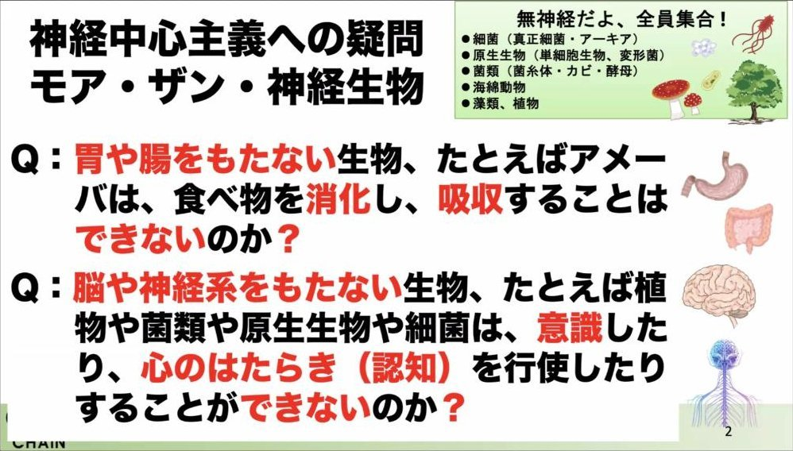
配信画面より
- 染谷さんは、最近は木を切ったり、薪や炭を作ったりする練習をしていて、植物との付き合いが長くなってから、論争や議論がとても面白くなった、と話を始めた。
- 今日の話は、鈴木さんよりもっとラディカルに進み、神経系をもたない生物たちの意識や心のはたらきについてのもの。こうした考え方はここ15年ぐらいで盛んになり、ベーサル・コグニションやプラント・ニューロバイオロジーといった形で、神経のない生物の知的でマインドフルな、意識的であるような振る舞いを研究している。今日は植物に限って紹介する、という。
- もともとギブソニアンと呼ばれる人たちの系譜のエコロジカル・サイコロジー（生態心理学）をやっていて、行為と知覚の哲学に応用するようなことをしてきたという。
- 出発点の問い。胃や腸をもたないアメーバも、食べ物を取り込んで消化・吸収する。胃がないから消化や吸収ができないとは、生物学では考えられていない。では、脳や神経系をもたない植物や菌類、原生生物、細菌は、意識したり、心のはたらきを行使したりできないのか。往々にしてできないと思われているが、そこを崩す話をする、と述べた。
- 「認知」と「心のはたらき」という言葉を使い分けていて、認知というと認識的な側面ばかりが強調されるので、心のはたらきというときは感情や情動なども含めて広く指している、とした。
- この議論は、人工知能のようなものも意識や心のはたらきをもつ、という方向にも進めるし、生きていることがかなり重要で、生きていることの本質は何かという議論に向かう方向にもなる、と予告した。
2. 心・意識の前提を問い直す
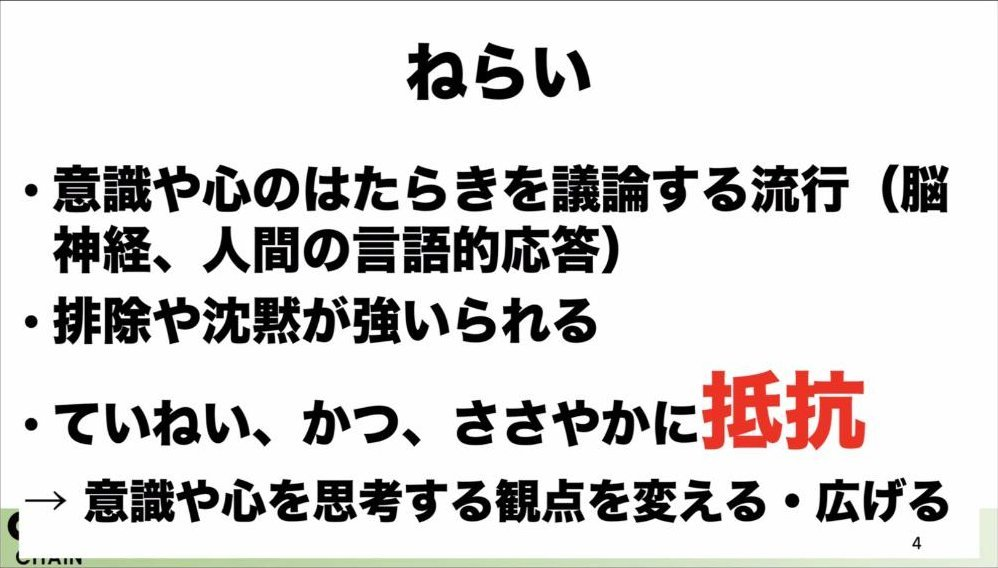
配信画面より
- 胃腸で通る論理が脳神経で通らないのはなぜか。心理学者や認知科学者がいくらデカルトはだめだと言っていても、心や意識は精神過程、消化や吸収は生理過程で、その間には種類の上での本質的な違いがある、という考えが背後にある。ここを崩すことを、自分の最後の仕事だと考えている、と語った。
- 「アニマシー心理学」はそこにつきる。生きている過程と、心のはたらきがあることとは分けられない、というのが今探求していることだという。
- ねらい。今、意識や心のはたらきを議論するのが流行していて、脳や神経、あるいは人工知能の人間的な言語応答をもって、意識や心のはたらきの証拠のようにする議論になっている。それに対して、たとえば植物に心があるという議論はなかなか乗れず、排除や沈黙が強いられている気分があるという。
- そこに、ていねいに、かつささやかに抵抗したい（茂木さんのように機関銃のようには喋れないので、ささやかに、とも）。心理学をやっていたこともあり、意識や心を思考する観点を広げたり変化させたりしたい。それは、LLMを含めた今の人工知能研究によって変わらなければならないことでもあると思う、と述べた。
3. アウトライン
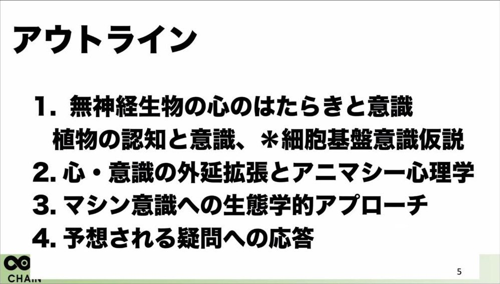
配信画面より
- 1つ目は、無神経生物の心のはたらきと意識についての経験的な研究の紹介（「無神経」はデリカシーがないという意味ではないが、面白い言葉なので使い続けている、とも）。今日は植物を紹介し、菌類やバクテリアは割愛する。時間があれば、細胞一個一個の中にすでに意識があり、生命誕生と意識誕生は同じだとする「細胞基盤意識仮説」も紹介する。これが今いちばんラディカルに進んでいる考え方だという。
- 2つ目は、心と意識の外延の拡張とアニマシー心理学。アニマシー心理学は染谷さんが作った言葉で、ライフ・マインド・コンティニュイティなどいろいろな言い方がされている、心と生命を連続化させる思想の動きの一つだという。
- 3つ目は、マシン意識への生態学的アプローチ（人工知能に対してどういう態度が取れるか）。4つ目は、きっと来るだろう疑問を予想して、それに答える、とした。
4. 植物神経生物学（プラント・ニューロバイオロジー）
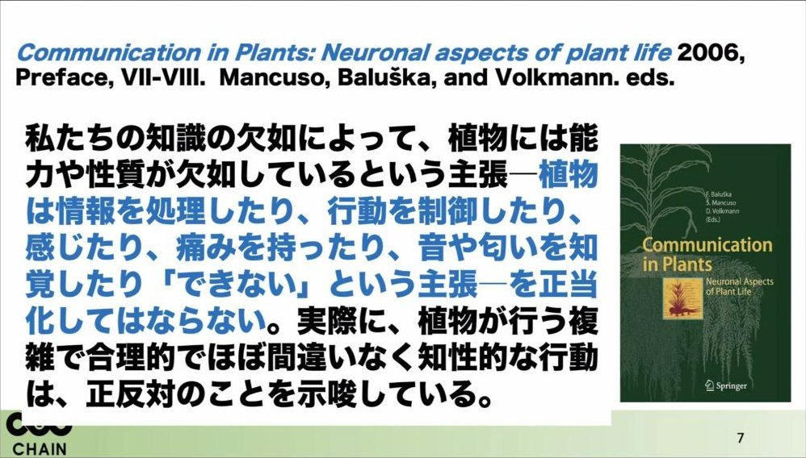
配信画面より
- 植物の認知、つまり心のはたらきや意識の研究として、イタリアのステファノ・マンクーゾ（日本語訳でもポピュラーサイエンスの本が出ている）やバルシュカらをはじめとして、「プラント・ニューロバイオロジー」の名を掲げた学会が発足した（スライドでは2005年）。
- その後の2年間ぐらい、重鎮である植物生理学者たちとプラント・ニューロバイオロジストたちの間で、罵り合いのような形のものすごい論争が、エッセイのやり取りでもなされたという。
- 植物にニューロンはないが、ニューロンの機能を果たすような体の中のメカニズムがあると主張し、さらに積極的にサイコロジカルな語で植物の行動研究をするプログラムとして誕生した。最初の論文集『Communication in Plants』をはじめ、この学会の論文は今インターネット上ですべて読めるという。
- ただ、その後、学会員の投票で学会名が「ソサエティ・フォー・プラント・シグナリング・アンド・ビヘイビア」に変わり、ニューロバイオロジーという言葉は使わないことになった。それでも、マンクーゾら立ち上げの中心人物たちはこの言葉を使い続けている。
- 植物の体内を活動電位が走っていることはわかっていたが、それが成長調節にどう影響するかはわかっていなかった。そこを積極的に取り上げ、植物の体全体としての適応的な機能を調べることを掲げた団体で、「ニューロ」という言葉を戦略的に使っているのだ、と説明した。
5. 植物の生体電気シグナリング
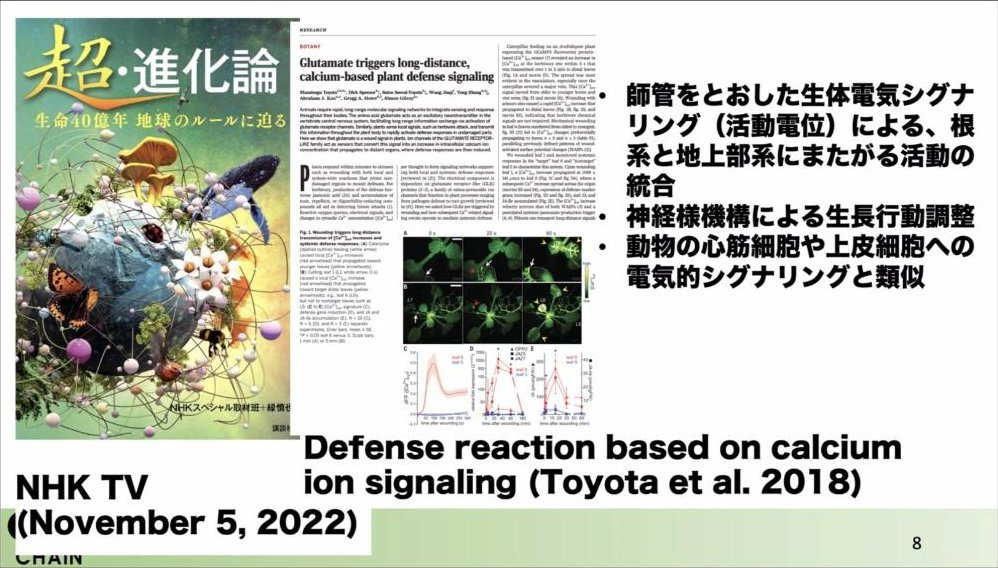
配信画面より
- NHKの番組「超・進化論」の植物を扱った回（スライドでは2022年）で取り上げられた例として、シロイヌナズナを紹介した。葉が虫に食べられると、カルシウムイオンのシグナリングが別の葉に届き、その虫が食べたときに消化不良を起こすような物質を葉の方で作る。自分の個体の中で作るだけでなく、隣の同種の植物個体に向けて揮発性の物質も出すという。
- エンドウで連合学習が行われたという研究もあるが、論争があるので今日は飛ばす、とした。
6. カメレオン植物論争
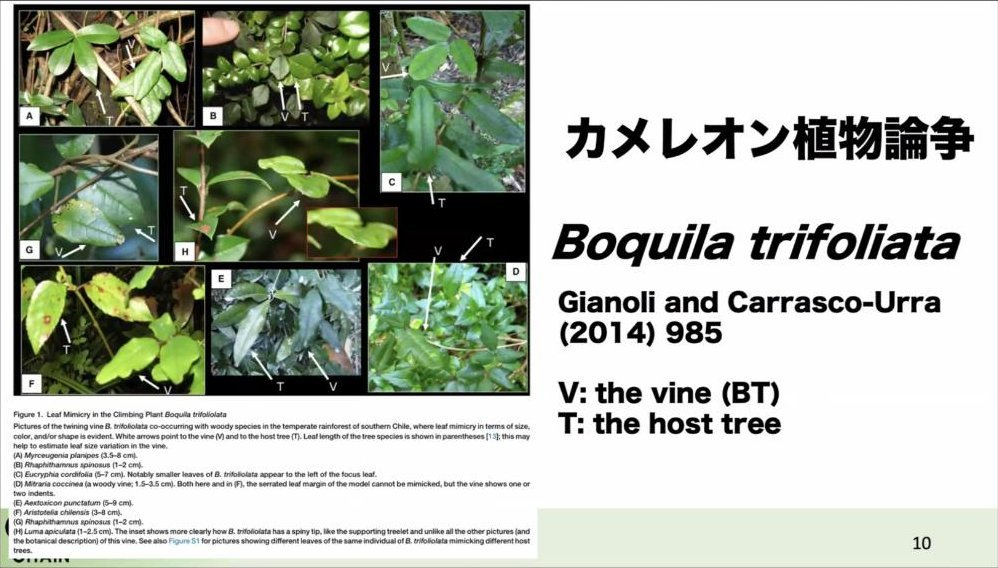
配信画面より
- 今日紹介するのは、最近いちばんの論争である「カメレオン植物論争」。南米に生息するボキラというつる植物は、ホストの植物に巻きついて上に登るが、巻きついたホストの葉に似てくる（擬態する）。同じ種類の植物なのに、巻きつく相手の葉の形に実際に似てくる。前々から知られていたが、なぜ似てくるのかはわかっていなかった。
- 2014年に報告された論文の著者たちは、検証したわけではないが、ホスト植物が発する化学物質を受容してその影響で葉の形が似てくる、という仮説（1）と、ホスト植物の遺伝子が水平移動する、あるいはウイルスなどを介して取り込まれる、という仮説（2）を出した。当時は2番目がいちばんありそうだと言っていたという。
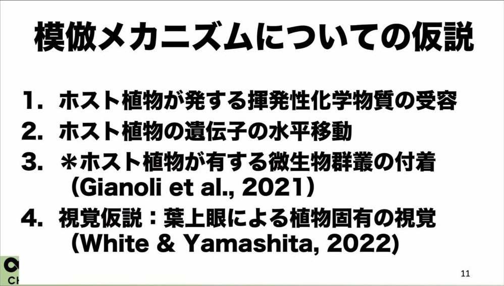
配信画面より
- 著者たちは2021年にもう一度論文を出し、微生物が付着しているのではないかとした（仮説3）。実はそれ以前から、プラント・ニューロバイオロジーの人たちが、正規の論文としてではなく「視覚仮説」（仮説4）を唱えていた。
- そして2022年に、ホワイトさんと山下さんが論文を出し、結構話題になってセンセーショナルにもなった。論文の審査では、プラント・ニューロバイオロジーのところから出しているからいい加減にやっているのではないか、といういちゃもんもついたという。
- 視覚仮説は、葉の上に、目にあたるアイスポットのようなものがあり、それで真似するのではないか、という考えだ。
7. プラスチックの葉にも似てくる？
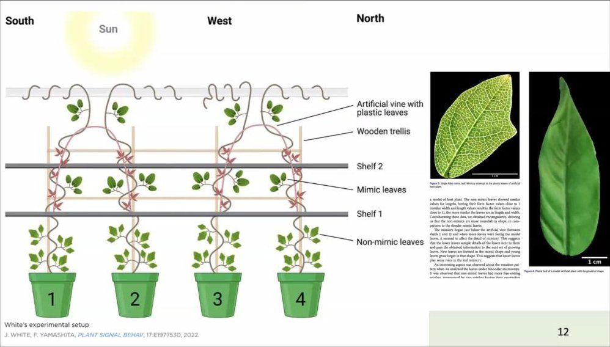
配信画面より
- 2022年の論文の実験は、心理学の古典的な比較実験のように簡単なものだという。巻きつくホストを、生きている植物ではなくプラスチック製の葉をもつ人工の植物に変え、揮発性物質や遺伝子の水平移動、細菌叢が移動しないようにした。
- すると、実際に葉の形が似てくる。図の下の方はプラスチックの葉を提示せず、上の方に提示して、巻きついたところで似ているかどうかを判断した。東西南北で向きを変えているのは、光の当たり具合が違っても同じ結果が出るかを見るためだ。これで視覚仮説が成り立つのではないか、と言っていた。
- ただ、この論文には、交絡要因が全部は解除しきれていないので甘いのではないか、といった批判もいろいろ出ている。
- 鈴木さんの講演にも出たクラミドモナスには、光を感知する「眼点（アイスポット）」があり、それに似たものが植物の葉にあるのではないか、という考えだという。別の論文（2023年）では、とくに神経系のない生物がもつ「目」は多様で、根にも光に対して感受性をもつ細胞があり、光を嫌って地中に向かうことに関係しているのではないか、と発表されていた。
- 2022年には『The Scientist』でも記事として扱われた。ボキラはヨーロッパに持ってきて研究すればよさそうだが、空輸すると途中で変わってしまうらしく、現地でやるしかないという制約があり、その後の検証がどこまで進んでいるかはわからない、と述べた。
- 面白いのは、この実験をした人たちが、植物が知覚し、行動し、自分の行動をコントロールすることをはなから否定しない人たちで、だからこういう実験計画を立てる点だという。先に触れたエンドウの連合学習（古典的条件づけ）の実験をしたガリアーノさんも、もともとプラント・ニューロバイオロジーの一部の人だ。植物の知的な行動の研究は以前から知られていたが、積極的に心理学的な概念を用いて実験を組み立て、堂々と話すという文脈はなかった。そこが今までと違う動きだ、と強調した。
8. エンドウのつるは支柱を「知っている」？
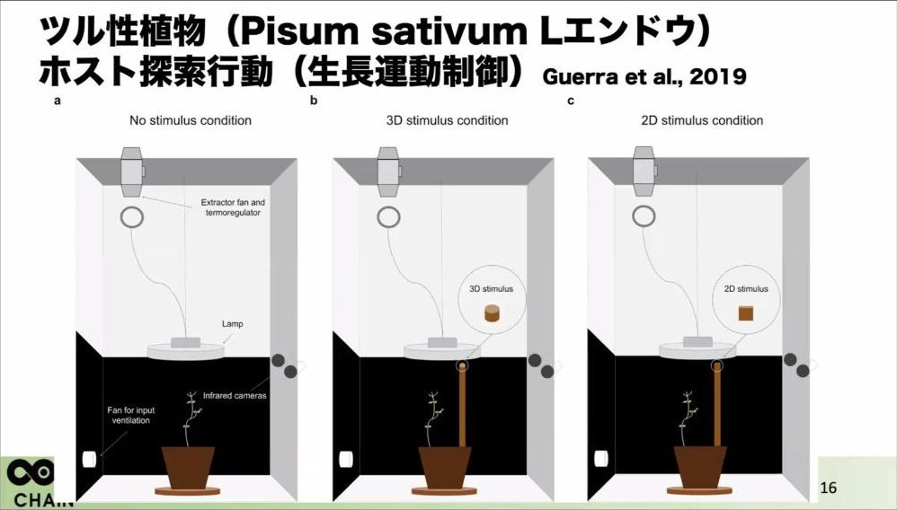
配信画面より
- 同じ流れの中で、別の雑誌に発表された実験として、つる植物がホストに巻きつく成長運動をどう調節しているかを調べた、古典的な「コテコテの」実験を紹介した。生え始めた芽の周りを黒く囲い、ライトを一か所から当てる。
- 条件は、柱がないとき、本物の柱があるとき、そして「2D刺激」として柱の写真を壁に貼っておくとき。植物に柱の写真を見せて成長の具合を調べるという発想は、少なくとも今までなかったという。
- 定点カメラで運動を撮り続け、加速度、開き具合の角度や最大の距離、平均速度などの運動学的特性を調べた。動くのは1分間に1〜2ミリぐらいで、肉眼では動いていないように見える。
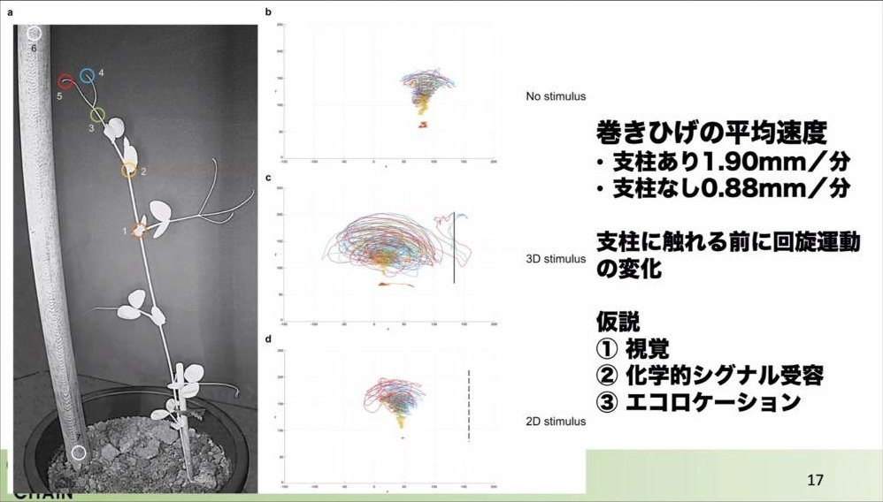
配信画面より
- 結果、柱がないときと写真のときとの間には統計的に有意な差がなく、本物の柱があるときにだけ明らかに差が出た。面白いのは、柱に触れる前のある時点から、回旋運動が大きくなることだという。
- なぜこんなことが起こるのか。仮説として、やはり視覚があって光の情報を使って自分の運動をコントロールしているのではないか、揮発性の化学物質を取り込んでいるのではないか、さらに「エコロケーション仮説」として、回旋するときに微細な音が出て、その跳ね返りで柱があることを知っているのではないか、といったものがある。まだ検証されていない、と述べた。
9. 植物の意識：行動観察からの経験的裏づけ
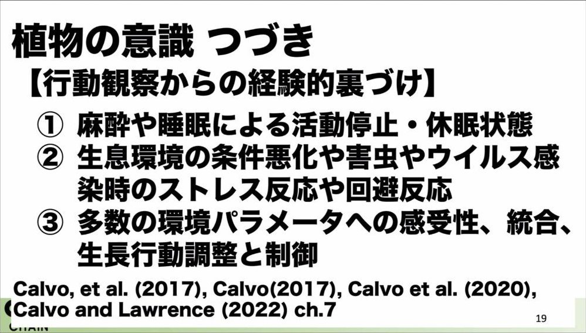
配信画面より
- こうした植物の認知研究をしている人たちが、2020年前後から植物の意識についても発言し出している。神経様の機構があること、そして植物も決してランダムに運動しているのではなく、周囲の状況に合わせて選択的・目的的に動いているのではないか、というのが主張だという。
- 経験的な裏づけとして挙げられているのは、麻酔によって活動電位のはたらきが停止したり一時休眠状態になったりすること、外界の環境によるストレス反応、そして（仮説も入っているが）移動できないからこそ、光だけでなく水分や乾燥、重力など外界の膨大なパラメータを感受し、根の方にエネルギーを投下して成長させるのか、シュート（茎や葉）の方を成長させるのか、全体的な調節をしているのではないか、ということだと紹介した。
10. 細胞の意識と、基底認知（ベーサル・コグニション）
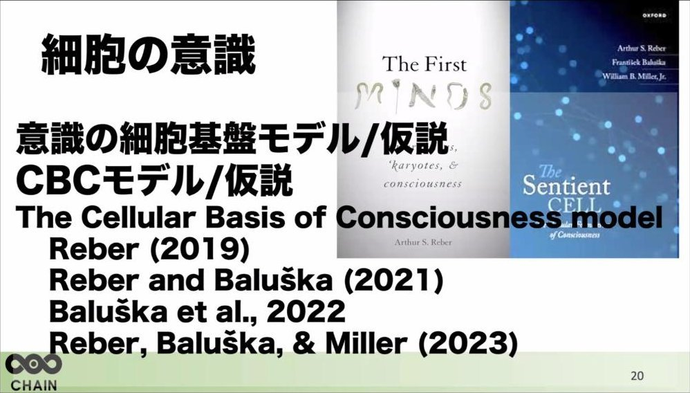
配信画面より
- その延長上に、2020年代ぐらいから「細胞基盤意識（CBC）モデル」という考え方も登場している。意識の神経基盤という考え方に向こうを張って、細胞がすでに意識をもっている、という考え方だ（詳しくは飛ばす、とした）。
- この人たちの言いたいことは、本の前書きにある「生命と感覚性（センティエンス）は同じ外延をもつ」という言葉に表れていて、細胞がどうやってセンティエンスをもつのかを問うべきで、脳やニューロン、ニューラルネットワークが心をもつかと考えるのはやめよう、ということだという。
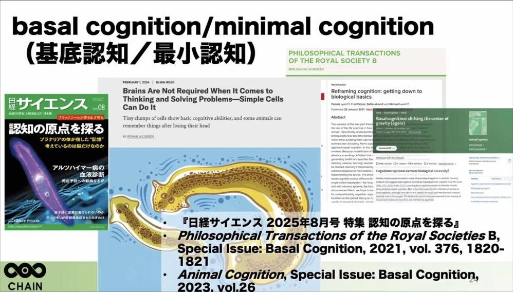
配信画面より
- 似た考えとして、植物神経生物学と直接のつながりはないが同じ流れに入る「ベーサル・コグニション（基底認知）」がある。日本語では日経サイエンスの8月号で初めて紹介され、マイケル・レヴィンのインタビュー記事も載っている。
- ベーサル・コグニションの側からは、見る限り意識（コンシャスネス）についての発言はないという。ただ、認知のミニマルな単位を、解剖学的な神経細胞をもつかどうかには求めず、生きていく過程を継続するために行っているプロセス（ライフ・プロセス、リビング・プロセス）を認知と呼ぶ、と宣言している、と紹介した。
11. まとめ：アニマシー心理学
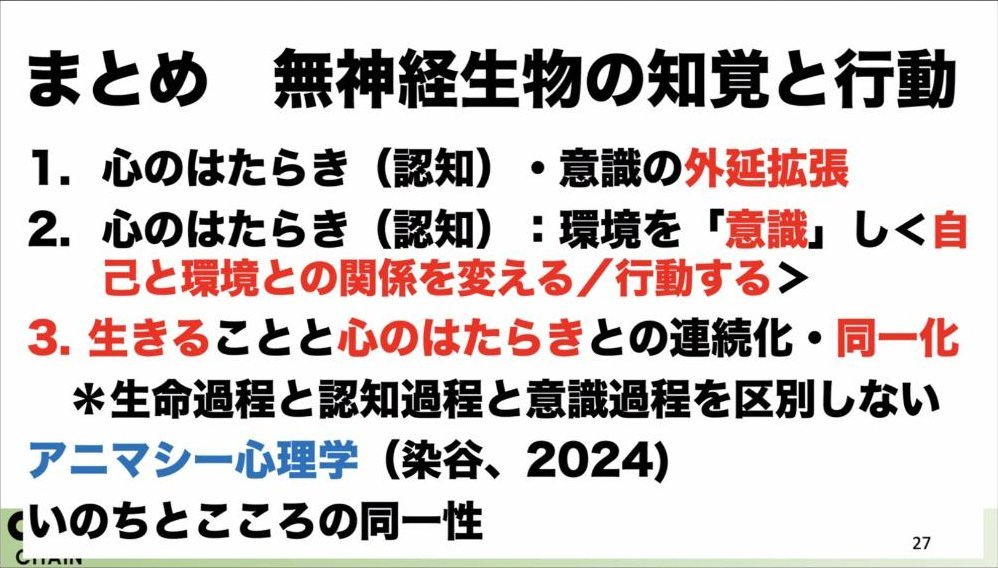
配信画面より
- まとめると、今、心のはたらきや意識の外延を意図的に延長させようという運動が起きている。
- 心のはたらきとは、周囲のあり方を意識し、知覚して感受し、行動して自分と環境とのあり方を変えていくこと。それによって生存に寄与するような形で生きる。こうして、生きることと心のはたらきを連続化・同一化する運動が、日本ではあまり特集されていないが起きている、と述べた。
- そこでは、生きている過程、心のはたらきの過程、意識過程（おそらく認知過程と意識過程も）をあまり明確に区別せず、全部を同一視、あるいは連続化してしまうような思考が起きている。
- 染谷さんはこれを、2024年に「心の哲学史」の本の中で「アニマシー心理学」としてレポートした。アニマシーは、魂、生きていることを意味する「アニマ」から来た言葉だという。こういう心理学がありうるのではないか、だから心理学科でも植物の心理学（プラント・サイコロジー）を真面目にやるべきではないか、と書いたという。
12. 心のはたらきの生態学的性格
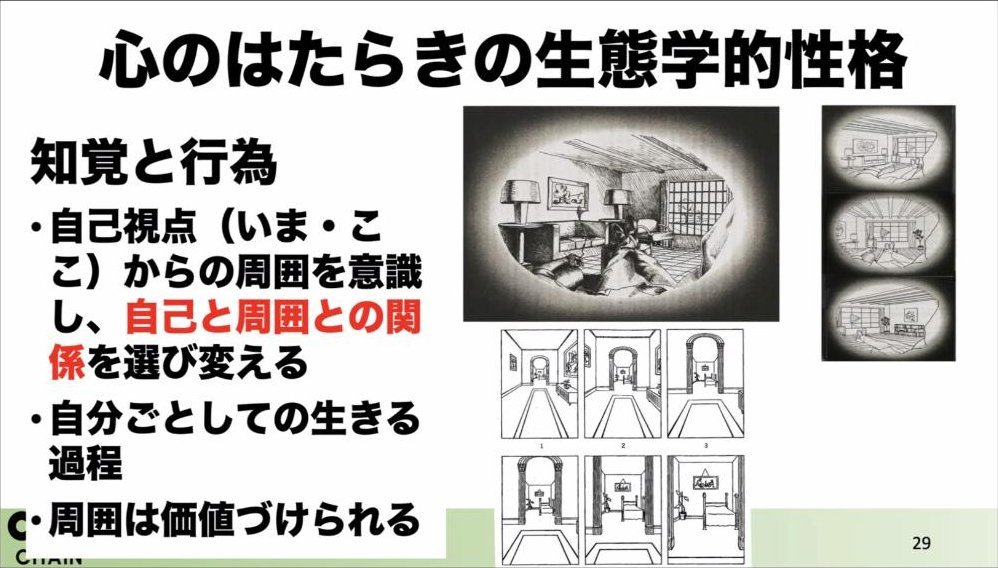
配信画面より
- 生態心理学に関わってきた立場から、生きることと心のはたらきの連続化を少し言い換えた。ここで心のはたらきというのは知覚と行為のこと。染谷さんは前日の渡辺さんの講演でも出たと前置きして、ネーゲルの「コウモリであるとはどのようなことか」では、意識をもつとはどういうことかを言い換えるのに「ポイント・オブ・ビュー（視点）」という言葉が何度も出てくる、と指摘した。
- 自分の視点から、今ここで周囲を意識する（知覚的に気づく）こと、そして行動して自分と周囲との関係を選んで変えること。少なくとも生き物は、これができないと自分の生存に必要な餌にありつけない。これは植物にも言えることで、これを心のはたらきの生態学的性格と呼んでいるという。
- ギブソンの生態心理学ではアフォーダンスが有名だが、染谷さん自身は、その手前の「視覚的自己（ビジュアル・エゴ）」論や自己知覚論にいちばん惹かれたという。周囲を知覚できることは、同時に周囲を見ている自分も知覚されていることでもある、という議論で、これがあったからアフォーダンス論につながっていった。
- イメージとしてマッハの自画像（左目から見た自画像）を示した。周囲の部屋や自分の足が見えていて、自分が部屋のどこに座りどちらを眺めているかも、風景が見えるのと同時に知覚されている。首を右に動かすと、左に見えていたものが見えなくなり、右に隠れていたものが見えてくる。風景の見え方の変化が、自分が今どういう姿勢でどちらを向いているかを教えてくれる。環境と自己の「共知覚」として論じられる文脈だという。
- これは人間の視覚の例だが、生命や生物は同じように、それぞれ環境の中に自分のパースペクティブをもち、運動によってそれが移動したときに変化する環境の膨大なパラメータの中で、次の運動をどうするかを調整している。
- 要は、自分ごととして世界を見る、世界を感受することができる視点をもっていることが、意識があること、心のはたらきがあることの本質ではないか、と考えた、と述べた。
13. マシン意識への生態学的アプローチ
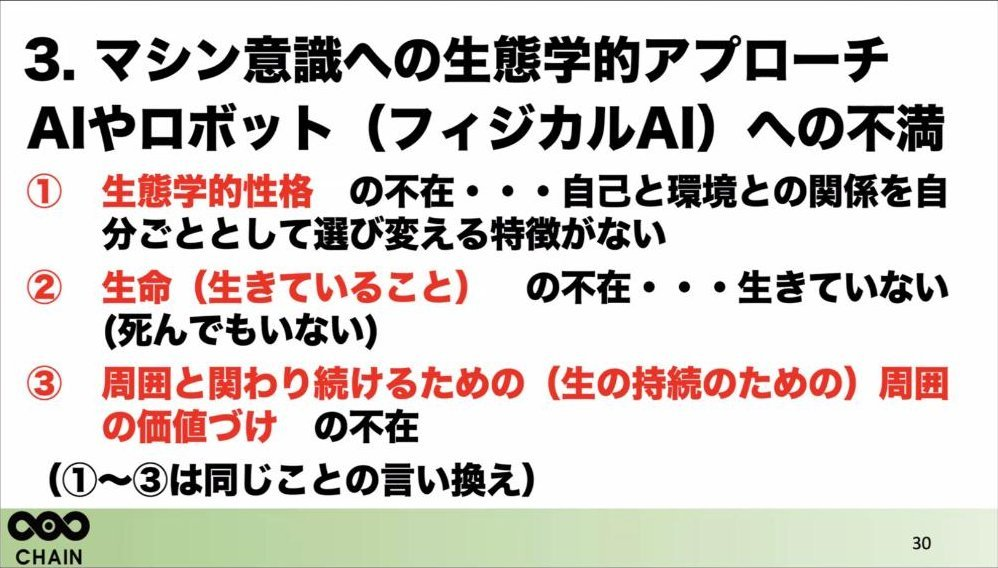
配信画面より
- 「ちょっとおっかないけれど、言わないといけないと思うので、勇気をもって言う」として、AIやロボット（フィジカルAI）への不満を挙げた。
- 先に断っておくと、生成AIは自分の文章の誤字脱字を見つけてもらうぐらいにしか使ったことがない。そういう意味でAIとインタラクションしていないから、意識があるとは思えないのだ、という点は認める。そのうえで、という。
- 1つ目は、生態学的性格の不在。自己と環境との関係を自分ごととして選び、変えていく知覚と行動ができていない。言葉の上でのやり取りの中では自我や自己があるように思えても、実環境の中で動いて、目的とする対象物を利用したり体の中に取り込んだりして生きていく過程を営むことができない。周囲にある自然との関わりの中で心のはたらきが発揮される、という点が見えないことが、意識や心のはたらきがあると思えない理由だという。
- 2つ目は、生命の不在。別の言い方をすれば、生きていない。ただしAIは死んでいるわけでもない。生物でも無生物でもない、よくわからないエイリアン的な存在だ、と述べた。
- 3つ目は、周囲と関わり続けて自分が生きていることを持続するための価値づけの不在。自分にとって害になるか益になるかという、いちばんプリミティブなものでもいい。1〜3は同じことの言い換えだという。
14. あり得る疑問への応答
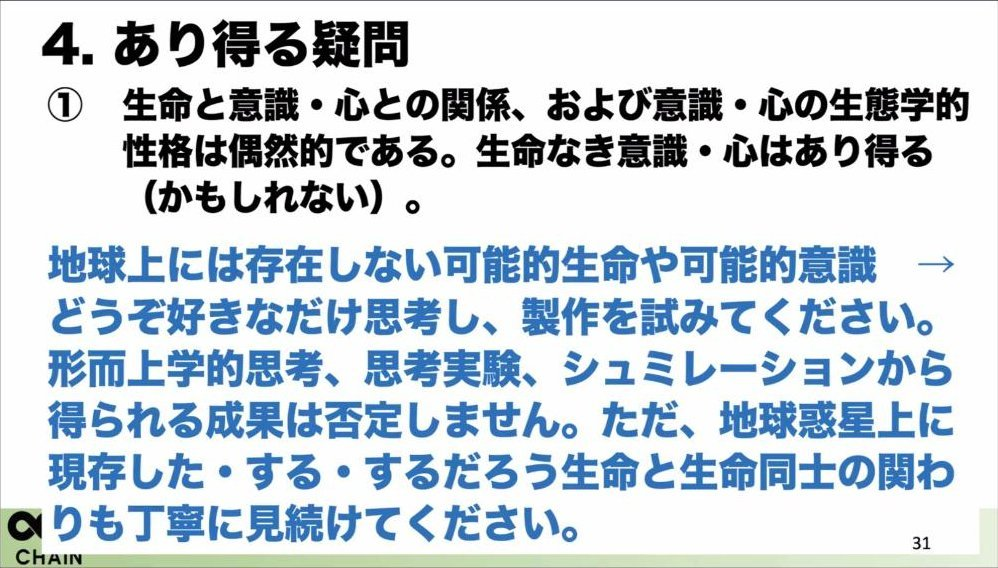
配信画面より
- 疑問1：生命と意識・心の関係や、心の生態学的性格は、この地球上では必然的に見えるが偶然かもしれない。生命なき意識や心はありうるかもしれない。人工生命の研究は、地球に誕生したものに限定されない生命の本性を探求するプログラムだ。これに対しては、好きなだけ思考し、制作を試みてもらって結構で、形而上学的な思考や思考実験、シミュレーションから得られる成果も否定しない、と答える。ただし、地球上に現存した・する・するだろう生命と環境との関わり、生命同士の関わりも、ていねいに見続けたい。むしろその視点がなくなって、「ありうる生命」の議論だけに集中していくのは、自分にとっては偏りすぎた形而上学に思える、と述べた。
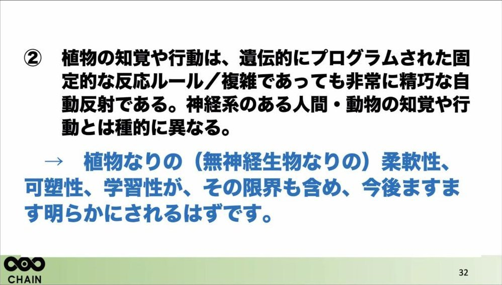
配信画面より
- 疑問2：植物の知覚や行動は遺伝的にプログラムされた固定的な反応ルールや、複雑でも精巧な自動反射で、神経系のある人間や動物とは種類が違うのではないか（デネットの本にも、有能さ〔コンピテンス〕とそれとは別のものを対比する話があった、とも）。これは経験的に崩されていくと考えていて、植物なりの、無神経生物なりの柔軟性や可塑性、学習性が、限界も含めて今後ますます明らかにされるはずだという。植物の行動研究は増え続けている、とした。
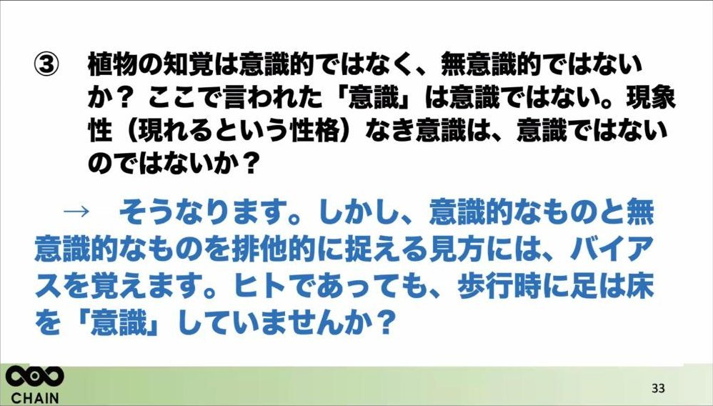
配信画面より
- 疑問3（おそらくいちばん致命的なもの）：植物の知覚は意識的ではなく無意識的なのではないか。現象的な性格（フェノメナリティ）のない意識は、意識ではないのではないか。スライドでは、まずはそうなる、と認めている。前日にも、眠っているときには意識がなくなるという考え方が出たが、自分の考え方でいくと、それでも意識はあると言わなければならないと思うという。寝ている人が、蚊に刺されたところをパチッとたたいてかくような振る舞いも、意識と呼ぶような考え方をしているのだろう、と述べた。
- 意識的なものと無意識的なものを排他的に、二値的に捉える見方の方にむしろバイアスがかかっている。人間でも、歩くときに足は床を「意識」しているのではないか。日常的な「意識」という言葉の使い方とも重なる、とした。
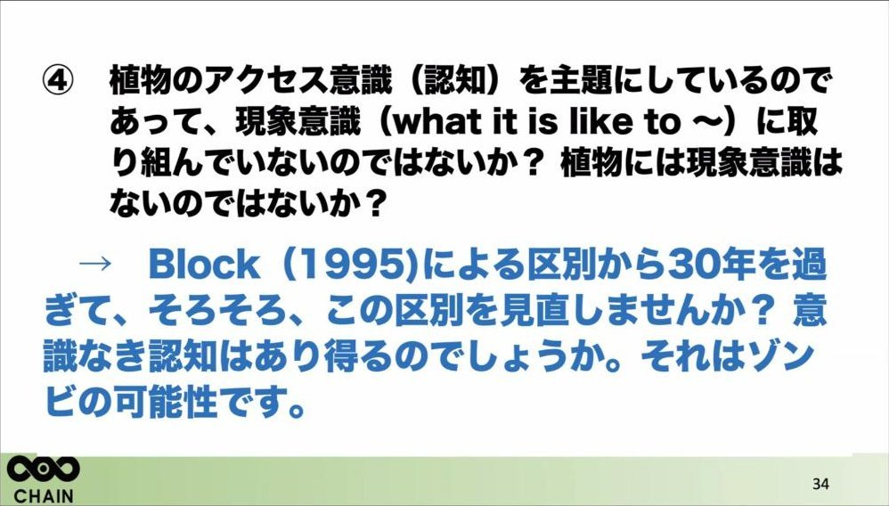
配信画面より
- 疑問4：植物のアクセス意識（認知）を主題にしているだけで、現象意識に取り組んでいないのではないか、植物に現象意識はないのではないか。本当はブロックの論文を読み直して批判しなければならないが、アクセス意識と現象意識が分けられてもう30年経つ。そろそろちゃんと考え直す時期に来ているのではないかという。
- 意識なき認知はありうるのか。前日にも話が出たゾンビの可能性に触れる問題で、自分はゾンビの可能性には否定的だ、と述べた。
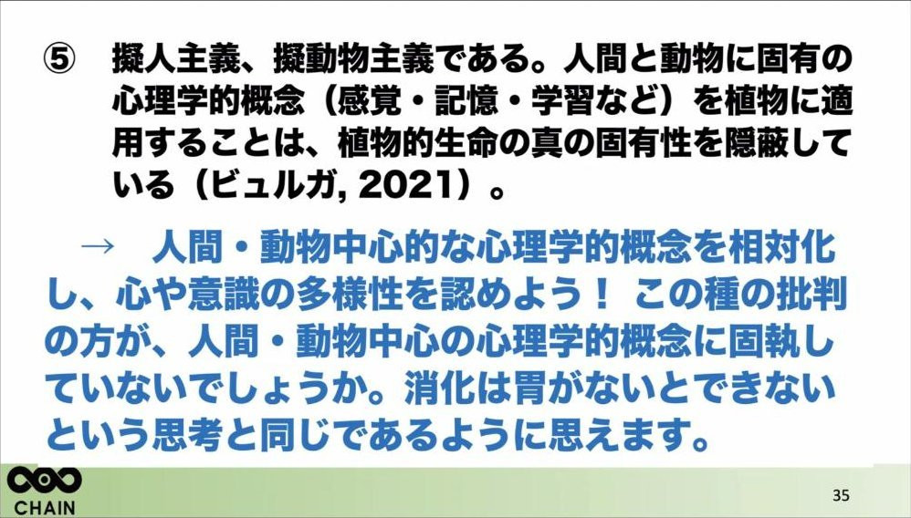
配信画面より
- 疑問5：擬人主義・擬動物主義だという批判。人間と動物に固有の心理学的概念を植物に当てはめるのは、植物の生命の真の固有性をむしろ隠蔽している、というもので、フランスの哲学者ビュルガ（『そもそも植物とは何か』）がこうした批判を出している。
- これには、こういう考え方こそ人間中心的な心理学的概念を相対化できない、凝り固まった擬人主義だ、と逆に返したい。心や意識の多様性を認めよう。消化で通じる論理が、なぜ心のはたらきには通じないのか、と答えて終わりにする、と述べた。
- 白か黒かでスパッと答えられない問題もあるので、煮え切らないところもあるが、このぐらいで、と講演を締めくくった。
15. 質疑応答から
- 会場から、自分も神経がないと意識はもてないのではと思い、植物を差別していたので面白かったという感想とともに、AIについて挙げた三つの点を克服したら、AIも意識をもつと考えるのか、という質問が出た。環境を察知して自分を変えていくことは、AIはもうできている、あるいはできそうだという。染谷さんは、これらを意識や心の基準として考えるなら、一応イエスと答えることになるだろう、もちろんツッコミどころはいっぱいあるが、と答えた。環境と言っても地球環境だけが唯一の環境ではない、という可能的な生命・可能的な意識の議論を飲み込むと、「これがAIだ」と言えるかどうかに直接パンチになるような判断は今は見当たらない。カメラで自然環境を情報として取り込み、学習して選び取るといったことも、センサーなどを使えばできると思う、とも。ただ、現時点で自分が生命性と感じるものは、少なくとも代謝機能をもち、周囲から自分を維持するためのエネルギー源を取り込んで消化・吸収し、排出するという、自然の循環の中のつながりにあるもので、ここまでを生命の定義に含めると、まだ難しい。それももてるかもしれないし、もてないとしても、地球上以外のありうる環境の中でそういう振る舞いができるなら生命と言っていいのではないか、という議論が続く、と述べた。
- 続けて染谷さんは、形而上学の議論はあまり好きではないと語った。思考実験で進む部分もあるが、議論が有意味に成り立つには、実際の経験科学で見つかったことを取り入れながら可能性を考えていく必要がある。何の制約もなしに可能世界を創造するのは、哲学のちょっとやりすぎなところだと思っている、と（水が百度で凍るといった、現実からは到達可能性がとても遠い可能性の例も挙げた）。
- 会場から、ここで示されたAIやロボットへの不満は2025年には成り立っていたかもしれないが、2026年以降、シングルエージェントからマルチエージェントへと進むトレンドの中で、来年や再来年にはほぼ成り立たなくなる可能性がある、という指摘。資源を確保していくような自己持続的なシステムを、池上さんをはじめ世界中の研究者が作ろうとしているという状況で、どう考えるか、と問われた。染谷さんは、もしそうなったとき、それが生命性をもつかどうかの議論に哲学者が真剣に参加するには、その中に入っていくしかないと思う、と答えた。自分は残りの人生のことを考えると、どこまでやるかわからないが、若い人たち、実力のある哲学者で関心のある人には、ぜひそこに割り込んで議論してほしい、自分も努力する、と述べた。
- 会場から、外延を拡張していくなら生命にとどまらず、ふつう無機物と言われるもの、とくに植物を育てる媒体である土も生きているのではないか、あるいは土こそが生きているのではないか、すべての命あるものは土から生まれて土に還るという考え方もある、という質問が出た。質問者自身は、それを自分の言う生命・意識・心とは別の意味での「命」として問題にしているが、染谷さんのように同じ意味ですべての生命に心や意識があると言うのなら、土にも心や意識があると言わなければならないのではないか、という問いだった。染谷さんは、今日はまったく用意していないが、イエスとは答えられないと思う、と答えた。すべてのものに命が宿るという、草木国土にまで及ぶ日本独自の思想にもつながるものだと思っているが、もう少し言葉を用意してから、と応じた。
- 会場から、植物が意識をもつと仮定したとき、その性質は人間や動物の意識とどう違うのか、という質問。人間、少なくとも現代人は自己同一性を強く感じるが、木は同じ根からいっぱい生えていて、一緒なのか違うのかよくわからないこともある、自己同一性などの面での違いは何か、と問われた。染谷さんは、ポジティブに答えられることはない、としたうえで、植物神経生物学と同じ時期に定まってきた「植物の哲学」という分野があり、マイケル・マーダーやエマヌエーレ・コッチャらが、植物の生を見ることで、個体性やアイデンティティなど、西洋哲学が人間を本質的に規定してきた概念を脱構築できるのではないかと積極的に言っている、と紹介した。自分はあまりコミットしていないがどんどんやってほしい。アイデンティティそのものも多様なものに変わっていく、思考の幅を広げるという点では、意識や心の話と同じ方向をたどっている、と述べた。
- 会場から、人間の神経の伝達は跳躍伝導などですごく速いが、植物はカルシウムイオンのシグナルで、とても遅い、という指摘とともに、時間についての質問が出た。植物は葉をかじられないように避けることはできず、かじられた後に毒を分泌するといった形で対応する。人間が痛いと感じる時間がこれぐらいなら、何千年も生きる木はすごく長い時間苦しんでいるのか、経験における時間の面はどうなのか、と問われた。染谷さんは、人間や動物と植物とでは時間スケールがかなり異なり、そのスケールの違いが逆に植物の行動や知覚を見えにくくしている、外敵への対処の戦略も違う、と答えた。命のいろいろな違いを、生きている時間スケールの違いとして考えていく余地は十分にあると思っている、と述べた。
- 会場から、長く議論してきた立場として、やはり納得がいかないのは組み合わせ問題だ、細胞に認識があるなら、なぜ多細胞体の我々は一個の意識になっているのか、という質問。染谷さんは、今のところポジティブな答えはないとしつつ、鈴木さんの講演のCPC（集合的予測符号化）の話を借りれば、個々の細胞には意識がなくても、集団になったときに意識が一つ出てくる、という議論ができるかもしれない、と答えた。細胞意識仮説の人たちも、多細胞化したときに細胞間で意識がまとまるといったアイデアを出し始めていて、神経細胞が登場する以前の段階で、電気的な仕組みによって細胞がまとまりのある活動をし、個体の生存に寄与する、それが崩れると、たとえばがん細胞のように周りに構わずひたすら増殖していく、といったことを議論し始めている、と紹介した。
- さらに染谷さんは、「一人に一個の意識」という前提も、もう少し考えないといけないかもしれないと述べた。道を歩いているとき、手や足や首を含めて全体が統合した形で運動しているが、それぞれのところで、たとえば足の細胞が地面を感じているといったことを考えるなら、一個の意識だと思わせている方が、実はちょっと特殊な意識のまとまりのモードなのかもしれない、と。質問者は、認知がいろいろなところで起きることはよい、意識はちゃんと取っておきたい自分と、それを認知と同義語として下の方まで落としていきたい染谷さんとの、用語法の違いにいつも帰着する、と応じ、議論は時間切れとなった。